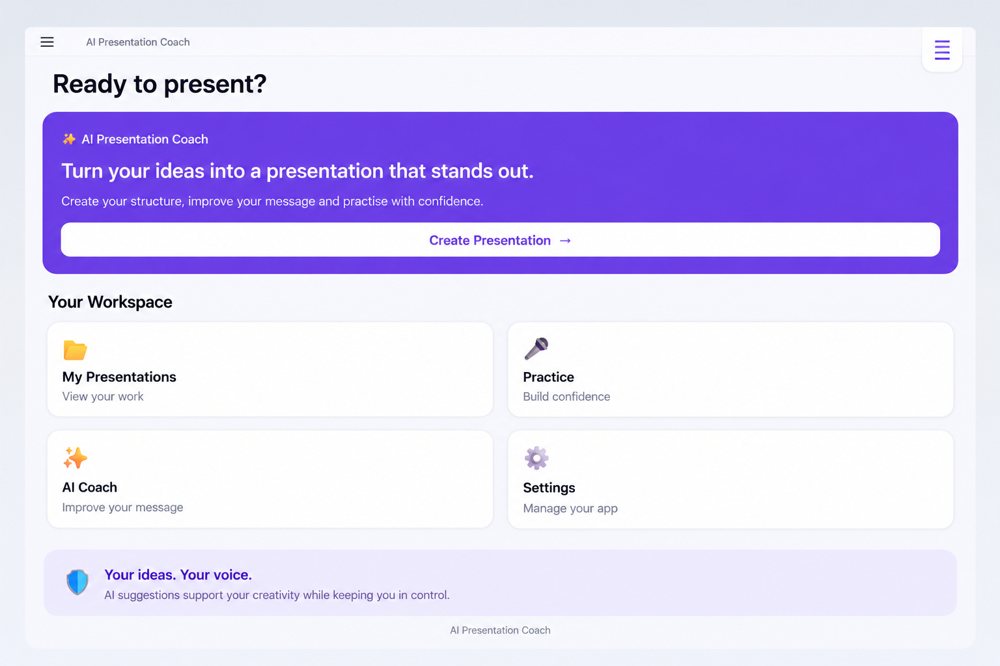
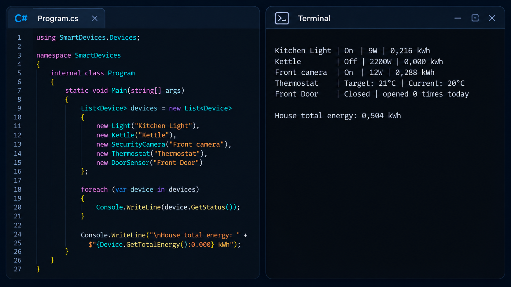

AI Presentation Coach
A mobile application designed to help users practise presentations and build confidence when speaking.
View on GitHub →Hi, I'm
I build practical applications while developing my skills across front-end, back-end and software engineering.
I am a software development student passionate about building practical applications and solving real-world problems through technology. I enjoy learning new technologies, working on projects, and continuously improving my software development skills.
My background in administration and customer service has helped me develop strong communication, organisation and problem-solving skills, which I bring into my work as a developer.
Technologies and tools I am learning and using to build software applications.
A selection of projects I have built while developing my software engineering skills.

A mobile application designed to help users practise presentations and build confidence when speaking.
View on GitHub →A cybersecurity dashboard that analyses security logs, identifies potential threats and generates security reports.
View on GitHub →
A C# smart-home simulation demonstrating object-oriented programming principles and unit testing.
View on GitHub →My professional and software development experience.
WeThinkCode_
September 2024 - December 2025
Developed software projects while working with programming, databases, testing, version control and software engineering practices.
FPS Properties
June 2015 - December 2018
Provided professional client support, handled administrative tasks, communicated with clients effectively, and ensured assigned tasks were completed accurately and efficiently.
Bowarts Properties
January 2013 - May 2015
Gained professional experience in administration, organisation, communication and working with clients.
Cash Crusaders
January 2012 - December 2012
Developed strong customer service and communication skills while assisting customers and processing transactions.
Cape Quarter Spar
January 2011 - December 2011
Developed strong customer service and communication skills while assisting customers and processing transactions.
My academic and software development training.
UWC Samsung Future Innovation Lab
May 2026 - February 2027
Currently developing my software development skills through practical programming and application development.
WeThinkCode_
September 2024 - December 2025
Software engineering training covering programming, software development, databases, testing and engineering practices.
Northlink College
January 2019 - October 2020
Tuscany Glen High School
January 2006 - December 2010
I'd love to connect. You can reach me through the links below.